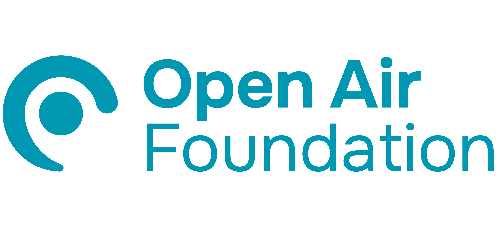

Monitoring Density Map
Live demo · sample data
Monitors
Health burden
⛃
Filters
▶
Story mode
↓
Export CSV
Choose a dataset
Monitoring gap (by city)
density × health · gap_ratio
Monitors (filtered)
one row per monitor
Density by city
one row per city
Health impacts
deaths · rate_per_100k
⊙
Sources
Data sources
Deaths · State of Global Air
GBD / IHME ↗
Population · UN WPP
+ World Bank ↗
Monitors · AirGradient API
map data ↗
EN
ไทย
Tip
Click a country for its death toll & monitoring, or an AQI pin for a monitor
Deaths attributable to PM2.5 (per year)
0 – 20,600
20,600 – 63,300
63,300 – 147,100
147,100 – 969,700
969,700 – 1,790,000
No data
PM sensors · AQI colour
Good
Hazard
Story
Exit
Next →